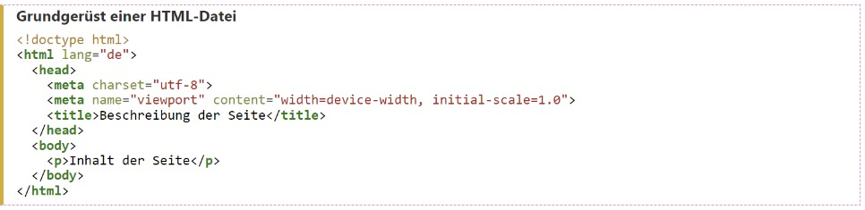

Was ist HTML?
May 13, 2023 by Sarah Schoengruber
HTML steht für Hypertext Markup Language, auf Deutsch Auszeichnungssprache für Hypertext. Hyper wird hier im Sinne von „erweitert“ gebraucht und bedeutet, dass Hypertext nicht einfach zur geradlinigen Lektüre gedacht ist. Statt dessen bietet ein Hypertext-Dokument Verknüpfungen zu anderen Textstellen an - die Hyperlinks. Das Ziel solcher Links kann im gleichen Dokument liegen oder auch in einem ganz anderen. Hypertext lässt sich auf unterschiedliche Weisen herstellen. HTML ist eine rein auf Text basierende Realisierung dieses Konzepts und verwendet spezielle Zeichenfolgen, um Hyperlinks zu erzeugen und Einsprungpunkte für Hyperlinks zu markieren. Gleichzeitig bieten diese Markierungen auch die Möglichkeit, den Inhalt des Dokuments zu strukturieren, so dass bei der Anzeige des Dokuments eine passende Darstellung erzeugt werden kann.
Aufbau von HTML-Dokumenten
Elemente
Dies sind die wichtigsten Tags:
-
<!DOCTYPE html>: Hiermit wird der Dokumenttyp deklariert, dies ist obligatorisch und auch notwendig, damit sich das Dokument richtig verhält. -
<html></html>: Das HTML-Element, oft auch Wurzelelement genannt, umschließt den Inhalt der gesamten Webseite. -
<head></head>: Im Head-Element wird all das abgelegt, das nicht Inhalt der Webseite ist. Darunter fallen z. B. Keywords, die von Suchmaschinen gefunden werden können, die Beschreibung der Webseite oder Links auf Stylesheets. -
<meta charset="utf-8">: Hiermit wird der Zeichensatz des Dokuments auf UTF-8 gestellt, was empfohlen ist, weil damit die meisten Zeichen der meisten Sprachen dargestellt werden können. -
<title></title>: Mit dem Title-Element wird der Titel des Dokuments festgelegt, der z. B. im Tab aufscheint. -
<body></body>: Das Body-Element umschließt all den Inhalt, den Nutzer*innen der Webseite sehen sollen, z. B. Texte, Videos, Audiodateien usw.
Attribute

Bei Attributen sollte man folgende Dinge immer im Hinterkopf behalten:
- Attributwerte sollten immer in Anführungszeichen gesetzt werden.
- Die Attribute kommen einfach hintereinander mit einem Leerzeichen getrennt. Die Reihenfolge der Attribute ist unwichtig.
-
Viele Attribute sind optional. Zb.
idundclass. Aber andere HTML tags setzen die Benutzung dieser voraus, wie etwaimgunda
Aus diesen Tags und Attributen kann man folgendes Grundgerüst bilden:
Folgendes sollte man sich also bezüglich HTML Dokumenten merken:
Ein sinnvolles HTML-Dokument besteht aus einem Head und einem Body
Der Header enthält Informationen über das Dokument, die nicht zum eigentlichen Inhalt gehören, z.B. Titel, Autor, Keywords, Kodierung, Sprache, … (Metadaten / SEO)
Der Body enthält eigentlichen Inhalt des Dokuments, z.B. Überschriften, Absätze, Listen, Tabellen, Formulare, Links zu Bildern usw.
Ein HTML Dokument hat immer eine Baumstruktur
HTML, CSS und JavaScript
Damit das HTML Dokument auch ansprechend aussieht, braucht man ein sogenanntes Stylesheet (.css) und um auch noch einige Funktionalitäten zu gewährleisten ist ein entsprechendes Javascript Dokument (.js) hilfreich.
Einbinden von CSS und JavaScript
Es gibt mehrere Varianten um diese Files mit dem HTML zu verlinken.
Die gängigste Methode besteht darin, im
<head> Element den Tag
<link>einzufügen. Bei dieser Variante muss das css
bzw. js Dokument separat gespeichert sein. Die zweite Variante ist
eher unuübersichtlich, da hier inline, also direkt im HTML Code die
Script Befehle geschrieben werden. Entweder wird dies im header
gemacht oder direkt im Tag. Hier beide Inline Varianten am Beispiel
von CSS:

![URI Aufbau]()